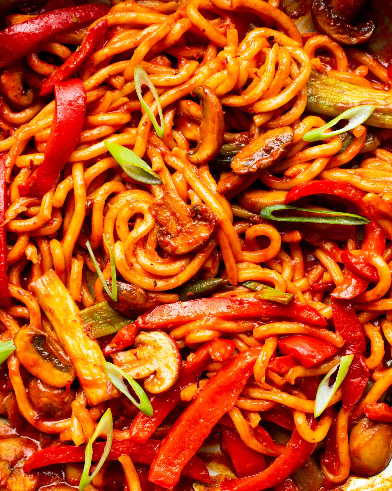

Gochujang Noodles (Spicy Korean Noodles)

Description
These Gochujang noodles are spicy, so simple to make and made with minimal ingredients. The spicy Korean noodles
come together in under 10 minutes and can be whipped up in one pan, making it the perfect weeknight dinner
recipe, or fun lunch if you need something to brighten up your day.
The vibrant red Gochujang paste allows us to get so much flavor, whilst putting in minimal effort. It is
perfect for a quick and simple dinner. Serve them with sauteed veggies, chicken or tofu if you like.
Ingredients
- 50 g spring onion, sliced into thirds, some reserved for garnish
- 1 red pepper, thinly sliced
- 250 g chestnut mushrooms, thinly sliced (or any other mushroom available)
- 4 tablespoons Gochujang paste
- 600 g (1 1/2 packs) Udon Japanese Style Noodles
- 3 cloves garlic, minced
- 2 tablespoons soy sauce
- 1 tablespoon rice wine vinegar
- 1.5 tablespoon rapeseed oil
- 150 mL chicken stock
Steps
- Start by adding the rapeseed oil to a large/deep frying pan on a high heat. Allow for the pan to preheat,
then add the spring onion, red pepper and mushrooms into the pan.
- Stir-fry on a high heat for around 5 minutes, constantly stirring.
- Meanwhile, combine the gochujang, soy sauce, rice wine vinegar and chicken/veggie stock in a bowl.
- Reduce the heat to medium/low and season the veggies with salt. Add the gochujang/stock mix and garlic into the pan and stir to combine.
- Place the udon noodles into the pan and cover with a lid for 2 minutes. This will allow the noodles to loosen before you try to move them.
- Remove the lid and stir the noodles into the sauce. Continue to cook for around 3 minutes, until the sauce has thickened/reduced and the noodles are cooked.
- Top with the reserved thinly sliced spring onion and enjoy!